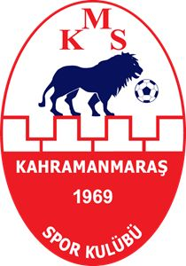

Şehrimizden Kareler


Kültürel Mirasımız

İstiklal Madalyası
Kahramanmaraş'a verilen İstiklal Madalyası, şehrin Milli Mücadele döneminde dışarıdan yardım almadan, kendi imkanlarıyla sergilediği destansı direnişin en somut onur nişanıdır. 12 Şubat 1920'de Fransız işgaline karşı halkın topyekün mücadelesiyle kazanılan zafer, Türkiye Büyük Millet Meclisi tarafından takdirle karşılanmış ve 5 Nisan 1925 tarihinde şehre "Kırmızı Şeritli İstiklal Madalyası" verilmiştir. Bu madalyanın en özel yanı, belirli bir şahsa değil, "Kendi Kendini Kurtaran Şehir" ünvanıyla tüm Maraş halkının fedakarlığına ve cesaretine atfedilmiş olmasıdır.
Kahramanmaraşspor

Geçmişten Günümüze Kahramanmaraşspor
1969 yılında kurulan Kahramanmaraşspor, şehrin simgesi ve spor tarihinin önemli yapılarından biridir. Kırmızı-beyaz renkleri ile mücadele eden takım, uzun yıllar 2. Lig ve 3. Lig'de mücadele ederek şehri profesyonel liglerde temsil etmiştir.
En büyük başarısı 1988/89 sezonunda kazandığı 1. lig şampiyonluğu sonrası süper lige yükselmesidir.
2025-2026 sezonunda 3. Lig'den Bölgesel Amatör Lig'e düşen takım, taraftarlarını üzüntüye boğmuştur. Yaşanan mali sıkıntılar ve yönetimsel sorunlar süreci daha da zorlaştırmıştır.
Nüfus
~1.1 Milyon
Bölge
Akdeniz
Meşhur Lezzet
Dondurma & Tarhana